The person who quotes your job is the one holding the brush.
Dylan Webster started Paramount Paint Company in Rexburg in 2018. He has painted hundreds of homes and businesses since, and he still does the work himself. That means the prep, the cut lines and the last touch-up all come from the same hands.
He covers your furniture, cleans up at the end of every day and asks for your feedback before he leaves. A job isn't finished until you're happy with it.
- Since
- 2018
- Google rating
- 5.0 from 19 reviews
- Based in
- Rexburg working all of SE Idaho
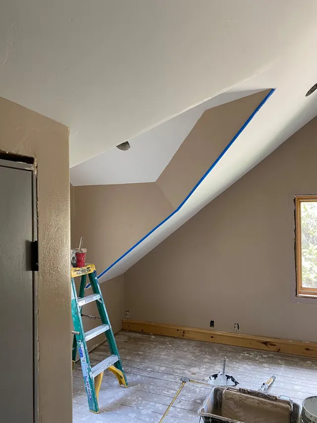
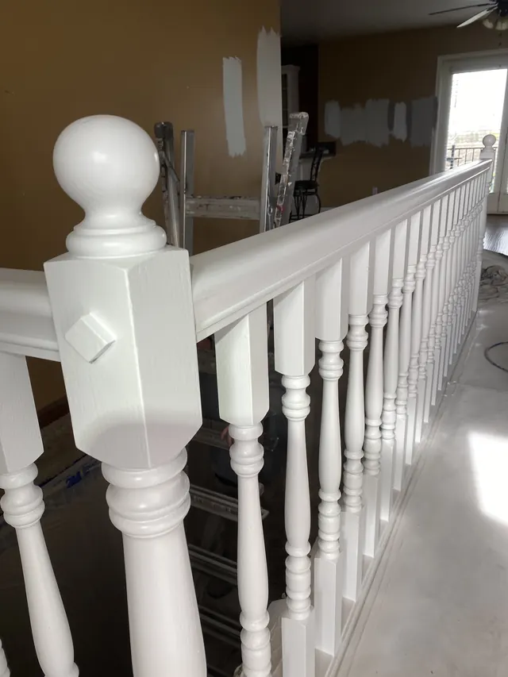
What Paramount paints
-
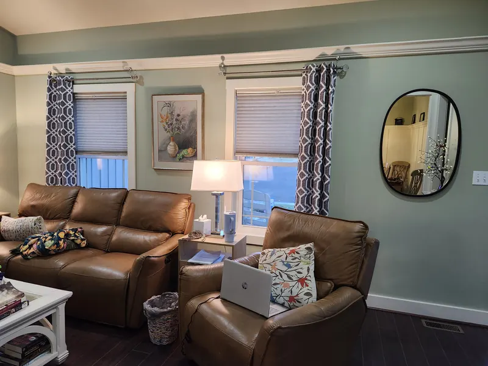
Interior house painting
Walls, ceilings and trim in one room or the whole house. Getting ready to sell? A fresh interior is one of the cheapest ways to make a house show well.
-
Kitchen cabinets
Dated oak or tired white cabinets painted to look new, often paired with patching and repainting the rest of the kitchen.
-
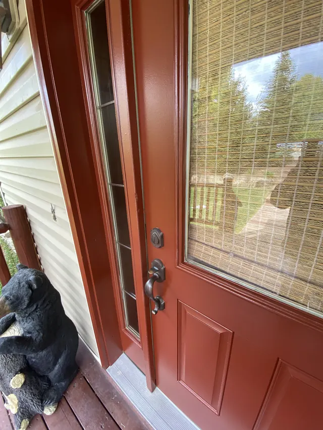
Trim, doors and railings
Baseboards, casings, stair rails and front doors. Trim in rough shape gets caulked and primed before it's painted, so the wood looks right again.
-
Drywall patching and prep
Holes, cracks and old anchors get patched and sanded smooth first. Paint only looks as good as the wall under it.
-
Commercial interiors, after hours
Offices, rentals, apartments and shops. Dylan can paint at night or on weekends so you never have to close.
Recent rooms
Homes and businesses from Rexburg to Island Park. Every photo here is a Paramount job.
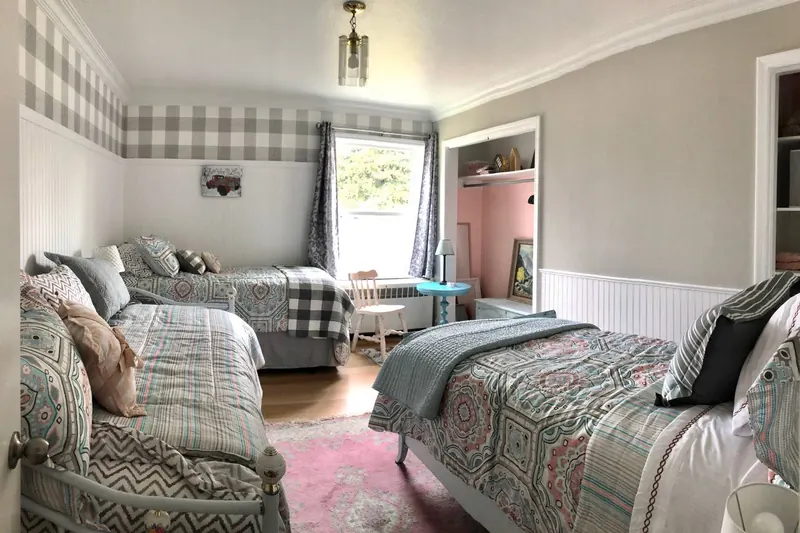
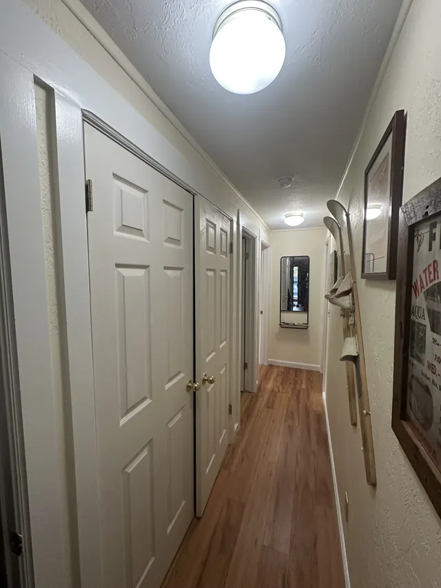
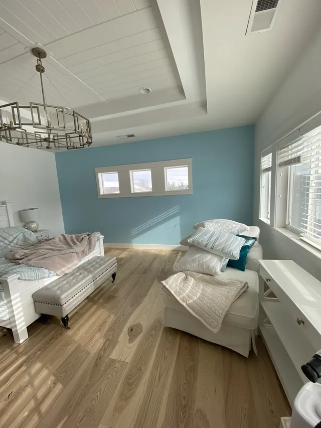
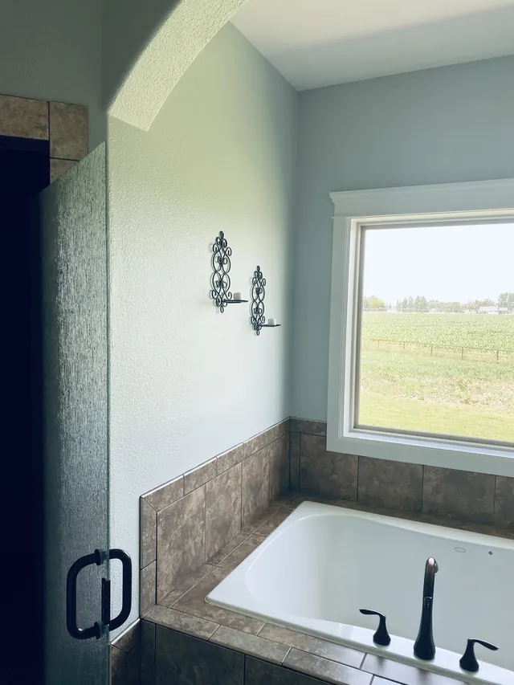
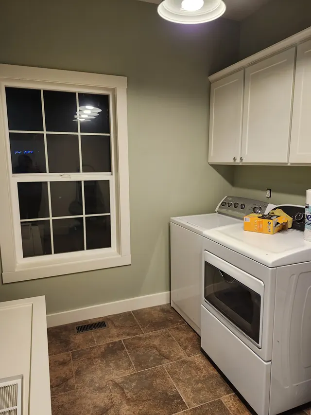
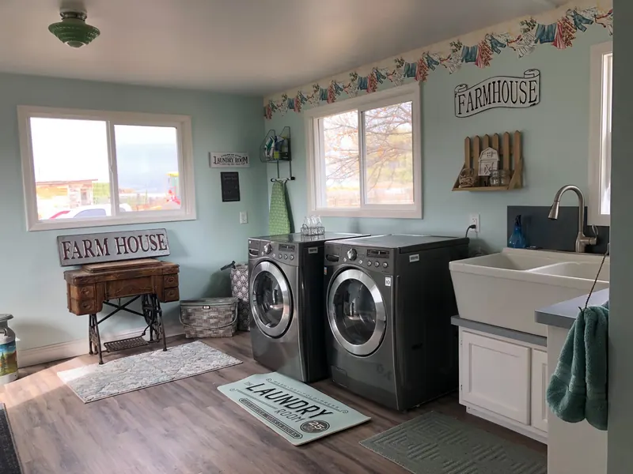
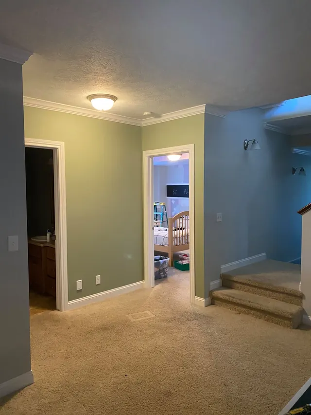
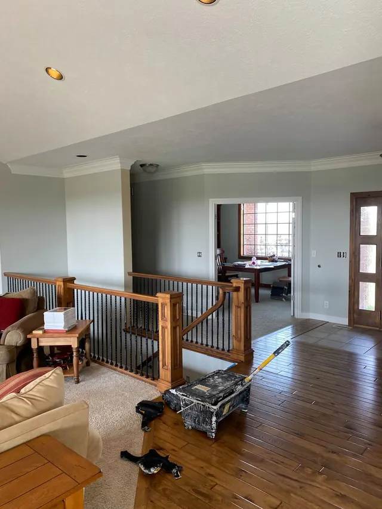
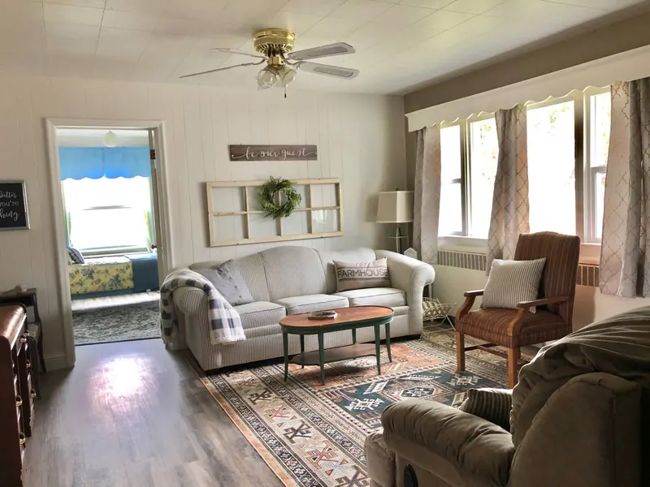
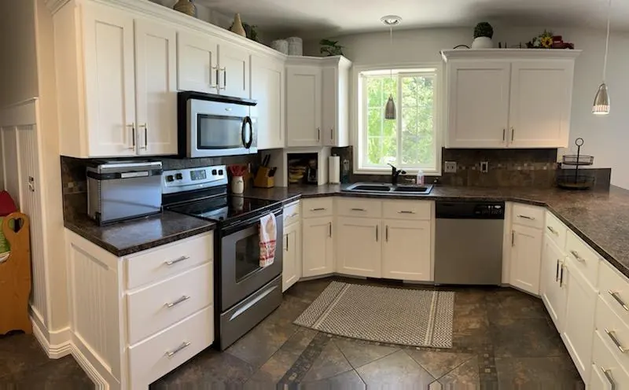
Reviews
Read every review on Google"I especially like that he is the owner and does all the work himself. He did a great job and everything looks fantastic."
"Our trim was in rough shape, and the caulking, priming and painting he did really brought the wood back to life more than I thought possible."
Wesley Gabel"The prices didn't change from his quote, and that was rare to find!"
Dorie Redder, Sugar City"He patched all the holes in the ceiling and made it look like new. He painted the cabinets and the kitchen to make it look very modern."
Sandra Thomason, Rexburg"We appreciated that he wanted our feedback after each day so that he could address any touch-ups."
Michel Meyers, Island Park"He showed up on time, took great care to protect our furnishings and did a spectacular job."
Kaye Marchal, Idaho Falls"Dylan was great to work with painting our entire farmhouse. He was meticulous in prep work and painting."
Debbie Ellsworth
Painting across Eastern Idaho
Paramount Paint Company is based in Rexburg, Idaho, and paints homes and businesses throughout Madison, Bonneville, Fremont and Jefferson counties.
- Rexburg
- Idaho Falls
- Ammon
- Sugar City
- Island Park
- Roberts
Somewhere nearby that isn't listed? Call anyway.
Questions people ask
Are estimates free?
Yes. Dylan comes out, looks at the job and gives you a free, no-pressure estimate. Call or text (208) 356-0480.
Who actually does the painting?
Dylan Webster, the owner. He gives the estimate, does the prep and painting himself, and checks the work with you before he calls it finished.
Can you paint my business without shutting it down?
Yes. Commercial interiors can be painted at night or on weekends so your hours aren't interrupted.
Do you help pick colors?
Yes. Dylan is happy to give advice on colors, sheens and paint lines, and he can order the paint for you.
Do you paint kitchen cabinets?
Yes. Cabinet painting is one of the most common jobs, often paired with patching and repainting the rest of the kitchen.
What do I need to do before you start?
Not much. Clear small items off the walls and shelves. Dylan covers floors and furniture, tapes off the room and puts everything away at the end of each day.
Get a free quote
Tell Dylan what you'd like painted. This drafts a text to him; you hit send.